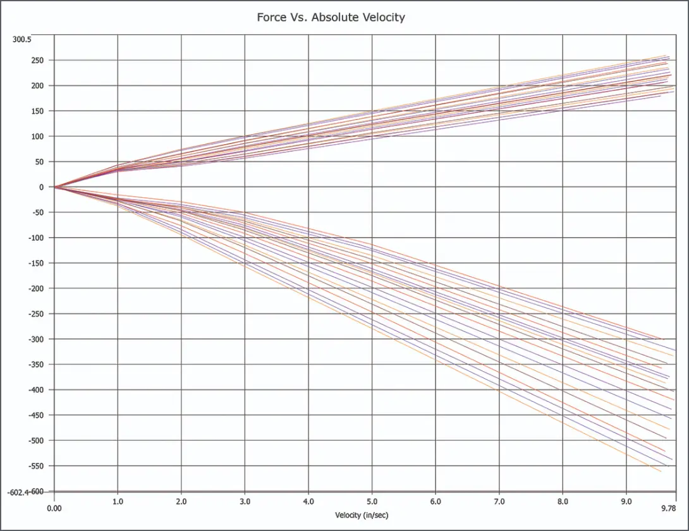
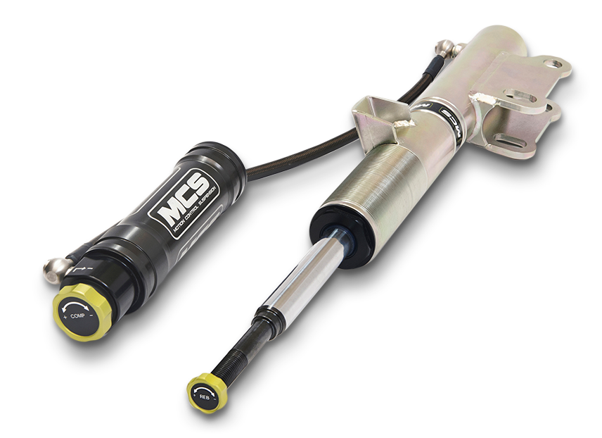

ACS Suspension Technology
Apex Competition Systems has experience working with suspension technology across a wide range of road racing applications, and we've compiled that knowledge here to address the most common questions around installation, setups, and effective tuning strategies.
The information below is intended to help you make informed adjustments as your setup evolves. If your specific application or goals go beyond what's here, contact us and we'll provide guidance based on your car, configuration, and use case.
Ordering Process
Expand for Details
1. Choose the damper system that is best for you.
- See the sections below to help you find the right system for your needs.
- If desired, ACS can provide consultation, at no charge, to get you into a suspension that will fit your budget, class rules, and goals.
2. Provide us with the following details.
- What spring diameter will you be using? (if you need springs, ACS can assist)
- What upper strut mounts do you plan to use?
- What is your top mount's spherical bearing ID?
- If purchasing dampers with reservoirs, do you want QDs? (Quick Disconnects are $600 per axle)
3. Once you place an order
- You will receive a confirmation email. Please review to assure correctness.
- We place the build order with MCS and give you an ETA on completion.
- Once the build is complete, we will supply you with tracking information and ship your dampers.
- Most domestic orders are shipped via UPS ground.
Choosing Your Suspension
Start with how you will use the car, then check your class rules and budget.
Remember that a highly adjustable damper is useful only if you can make good use of its settings.
Use Case:
Street and Club Sport (occasional track use) may favor a simpler setup. (eg; 1NR or 2NR)
Dedicated Track and Race cars will benefit from the additional tuning of the 2 & 3-ways as conditions / setups change.
Capabilities: (see detailed info below)
A 1-way damper mainly adjusts rebound.
A 2-way adds independent compression adjustment.
A 3-way also separates low- and high-speed compression, giving you even more control over how the car responds.
Complexity:
More adjustments require careful testing and consistent notes to extract results.
If you are new to damper tuning, a well-chosen 1- or 2-way system may be easier to use effectively than a 3-way.
Remember that MCS are upgradable when the need arises to extract maximum performance.
Class rules and Costs:
Final selection criteria may be up to your class rules on adjustment limits and remote reservoirs.
Budget for the complete setup, including springs, top mounts, camber plates, etc.
Choose the most capable system you can afford, understand, and use within the rules.
Damper FAQ
Do I need remotes ?
Do I need remotes if the adjustment can be had without?
It really comes down to budget.
A remote canister gives more room for oil and pressurized gas than is possible inside the main damper body.
- More oil volume removes more heat.
- Cooler separated gas better prevents cavitation.
- A cooler damper performs better, for longer.
- Canisters provide for external adjustments.
- External adjustments make it faster to tune.
Canisters improve damper performance across the board but the additional components come with a cost.
Faster Lap Times?
MCS dampers help the car stay composed over bumps, curbing, and weight transfers, giving the driver more confidence to brake, turn,
and apply power.
A 0.3-second gain per corner, per lap is a typical result when upgrading from dampers, such as older Koni or Bilstein.
Gains can be larger when replacing a street-oriented aftermarket "coilover" kit.
- Better control of the tire contact patch.
- More consistent balance during transients.
- Gains depend on the car, track, setup, and driver.
Attack the Curbs!
MCS proprietary blow-off valves manage sharp, high-speed compression events, such as aggressively attacking the curbs. When damper shaft speeds rise suddenly, the valve allows compression force to increase more gradually. This reduces the impact transmitted to the tire, helping preserve grip on track.
- “High speed” refers to the damper, not vehicle speed.
- The tire stays planted over sharp bumps and curbing.
Developed in Motorsport
The founders of MCS built today's suspension industry working for leading companies like Moton and JRZ.
That experience laid the technical and philosophical foundation for everything MCS builds today.
From road racing to autocross, hill climbs, and rally, MCS dampers deliver mechanical excellence and confidence you can feel.
Why Monotube?
Monotube Construction is very stable with more oil capacity and better heat dissipation than twin tube dampers. The large main piston gives quick, accurate damper response and the divider piston separates oil and gas, eliminating cavitation which causes loss of traction.
Why MCS?
MCS is an American manufacturer based in Atlanta, Georgia.
Engineering, Design, Assembly, Service and Inventory are all controlled in house. This eliminates overseas delays, tariffs, and unnecessary freight, giving customers faster access to products and direct engineering and technical support.
MCS is also a superior product to many imports. See the section below for more details on MCS quality and enginering.
Gas Pressure Adjustment
Remotes allow easy adjustment of the nitrogen gas pressure.
This allows changes in overall damper support without changing the actual damper settings.
Reservoir pressure is set at 175 from the factory, but is adjustable from 100 to 275 PSI.
More pressure supports higher cornering loads in high grip conditions, or less pressure allowing more suspension movement when running in low grip conditions (such as rain).
Analog Tuning
No laptops, no software, no guesswork. Just mechanical precision.
Every adjustment is a precise, repeatable click you can feel and hear.
Changes are immediately noticeable, allowing faster setup at the track.
Amateur drivers gain clarity. Professionals gain precision.
Settings remain consistent session to session, season after season.
Upgradable?
MCS dampers are built to develop as your driver and car do.
The modular design of MCS damper systems uses common parts for easy upgrades, without the need to invest in a new package.
- Start with a basic system and add features as needed.
Spring Rates?
MCS damper's precision allows for higher spring rates without punishing the tires. The result is better platform control, quicker transient response and increased grip without instability or shock. Cars feel faster and calmer, not just because of grip, but because of how predictably that grip is delivered.
Conversely, when needed, a softer spring can be used to generate mechanical grip while using increased damping or gas pressure of the dampers to control the platform with softer springs.
MCS precision engineering gives you options.
Suspension FAQs
FWD Suspension Engineering
ACS is developing a new section of this website dedicated to how to setup and tune your race car with our suspension systems.
We will initially focus on the often ignored topic of FWD setups. Stay tuned for updates!
TBD
High Speed, Low Speed?
What does "High Speed" and "Low Speed" damping mean?
Speed refers to how fast the damper shaft is moving. We're not talking about the car's velocity.
Low-speed compression controls the rate at which the chassis pitches or rolls under braking, turn-in, and throttle application.
But when the damper compresses rapidly, such as over bumps or curbs, rising oil pressure opens a second flow path through the high-speed valve.
Increasing the high-speed compression setting raises the pressure needed to open that valve. The low-speed bleed still flows, so the two adjustments can overlap.
Single Adjustable
A single-adjustable damper such as the MCS 1WNR uses one control to primarily adjust rebound. "Primarily" because as shown on the force graph to the right, when rebound is increased (lower traces) the compression force also increases slightly (upper traces).
The 1NR offers a straightforward way to tune the car without managing a separate compression setting.
- A good choice for those who want a set & forget solution.
- 18 Clicks of Adjustment
- Each click produces a clear, predictable change in control.
- Future-Ready 2WNR Upgrade Path
The single adjustable is for those who want the benefits and grip of modern damper design but without the complexity of managing separate compression and rebound settings.

Double Adjustables
A double-adjustable MCS damper lets you tune compression (bump) and rebound (extension) independently. The 2WNR puts both adjustments in one control at the top of the damper; the 2WR places compression adjustment on a remote reservoir and rebound adjustment at the damper. This gives you more control over chassis support and how the suspension settles after bumps and driver inputs.
- 2WNR: 14 clicks of bump and 18 of rebound adjustment.
- 2WR: Remote reservoir with 18 clicks of bump and rebound.
- Separate settings to tune each side of the damper stroke.
MCS Double Adjustables are the sweet spot for for Club Racers, Dedicated Track Cars and Time Attack. Adjustability to match changing track conditions, and to adapt to the car's development.

Triple Adjustable
The MCS 3WR adds a third adjustment to the 2WR layout: separate low-speed compression, high-speed compression, and rebound controls. Low-speed compression helps manage body motion during braking, turning, and acceleration; high-speed compression helps the damper respond to curbing and sharp bumps. The remote reservoir also adds fluid capacity for more consistent performance under sustained load.
- Independent low-speed and high-speed compression.
- 18 clicks each of high-speed compression and rebound.
- Separate controls give experienced drivers more setup options.
When you're ready to make the move up, the MCS 3-way can deliver! Faster drivers and faster cars will benefit from the enhanced adjustability.

MCS 4-way Adjustable
The MCS 4WR is available from ACS only by special order.
Why special order?
The MCS 4WR is developed for the most demanding professional and competition level applications.
The MCS 4-way operates in a narrower window which requires specific intial valving. If your team logs suspension data on a per session basis and have a decicated engineer to focus on setups, then you may benefit from this professional damper.
The 4WR gives you maximum definition through fully independent high and low speed circuits and MCS's most advanced blow off architecture.

General MCS FAQs
Here are some of the common questions ACS receives about adjustable dampers.
What does the MCS 2WNR adjust?
The 2-Way Non Remote damper lets you adjust compression (bump) and rebound (extension) independently. Press the center release button to raise the knob for compression; push it down until it snaps into place for rebound.
How is the 2WR better?
The 2-Way Remote damper lets you adjust compression (bump) and rebound (extension) independently. This gives you more control over chassis support and how the suspension settles after bumps and driver inputs.
Which direction makes the damper firmer?
For either adjustment, turn the knob counterclockwise toward plus (+) to increase damping.
Turn it clockwise toward minus (-) to soften damping.
How many adjustment clicks are available?
This depends on the specific damper. The 2WNR has 14 clicks of compression, but all others have 19 positions (18 clicks), from 0 (softest) to 18 (firmest) for both bump and rebound.
How do I find the zero position?
Move the knob to the adjustment you want to set, then turn it clockwise gently until it stops. Back it off slightly if needed so it settles into a detent. That is position 0. Do not force the knob past the stop.
What starting settings does MCS recommend?
For initial installation, start both front and rear dampers at compression 4 and rebound 8. From each adjustment’s zero position, turn the knob counterclockwise 4 clicks for compression or 8 clicks for rebound.
How do I switch from rebound to compression?
Press the release pin in the center of the knob to bring it from the lower rebound position to the upper compression position. Push the knob down until it clicks to return to rebound.
Where should I leave the adjuster knob?
MCS recommends running the dampers with the knob locked in the lower rebound position.
Canister Holes
Typically a 2.5" hole will be large enough for the canister to pass through the inner fender well.
We recommend using a Seals-It Firewall Grommet to seal the hole. The 3" split style works well. ACS can provide these seals.

MCS Dampers for Volkswagen
From heavy hitting entry level systems to the highest performance systems.
From the pioneers of the racing damper industry to your race car... brought to you by Apex Competition Systems.
- Monotube Design
- Single, Double and Triple Adjustable
- Up to 18 clicks of bump and rebound adjustment
- Spherical Bearing Mounts
- Industry leading internal engineering
- Ease of adjustment with changes you will feel